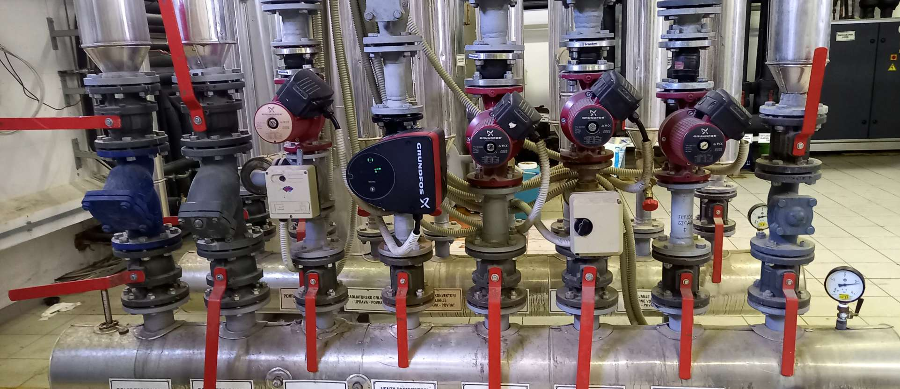
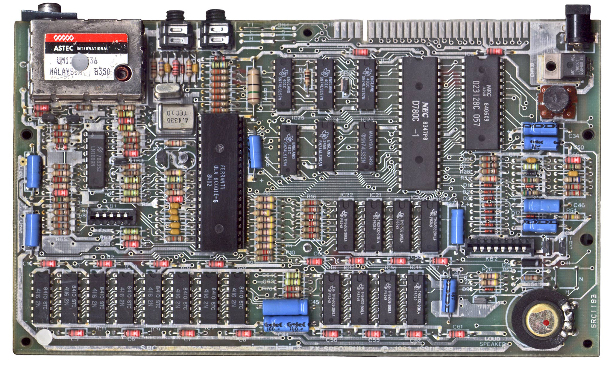
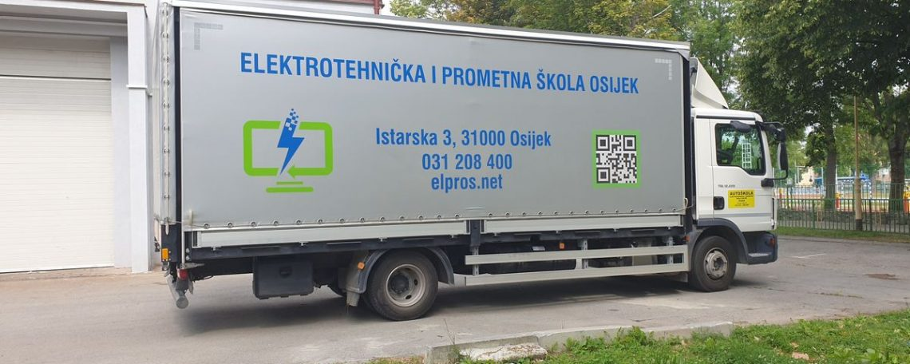

|
ELPROS TROGODIŠNJA ZANIMANJA |
|||
| Elektromonter | Elektroničar | Vozač motornih vozila | |
 Elektromonter obavlja poslove u proizvodnji, prijenosu i distribuciji električne energije od proizvođača do potrošača. Također radi na montiranju i rekonstrukciji elektroenergetskih postrojenja, električnih mreža i elektroinstalacija. Radi i na postavljanju strojeva, transformatora, mjerno-regulacijskih naponskih vodova, visokonaponskih i niskonaponskih razvodnih postrojenja i električnih upravljačkih aparata. Vrši izvedbu nadzemne mreže izbor odgovarajućih stupova, skladištenje i transport stupova do mjesta postavljanja, polaganje uzemljenja i namještanje vodova za uzemljenje.Montiranje složenih elektroničkih uređaja, kontrolu proizvoda prema uputama i propisima, obavljanje poslova održavanja elektroničkih uređaja. Kronične smetnje respiratornog sustava, kronična oboljenja unutarnjih organa (osobito srca i krvnih žila), vrtoglavice, nesvjestice, teže deformacije kralješnice, slabi vid te strah od visine mogu biti zapreke za obavljanje ovih poslova.
 Elektroničar obavlja poslove proizvodnje i održavanja elektroničkih sklopova i uređaja. Osnovni poslovi se odnose na izradu elektroničkih sklopova i tiskanih ploča, montiranje složenih elektroničkih uređaja, kontrolu proizvoda prema uputama i propisima, obavljanje poslova održavanja elektroničkih uređaja i uporabu aplikacijskih računalnih programa u projektiranju i konstrukciji elektroničkih sklopova. Elektroničar za računalstvo servisira i održava računalnu opremu, provjerava ispravnost računalnih komponenata, rad računala i računalnih mreža, montira računala, prateće komponente i instalira programske potpore, umnaža podatke na medije za pohranjivanje i arhiviranje tehničke dokumentacije, servisira i poslužuje računalne sustave. Elektroničar za audio i video tehniku provjerava ispravnost komponenata audio i video uređaja, servisira i održava audio i video uređaje te vodi skladišta komponenata i uređaja u servisima audio i video opreme. Elektroničar za automatiku provjerava ispravnost mjerno-regulacijskih komponenata, montira, servisira i održava uređaje i sustave za upravljanje i vođenje procesa te vodi skladišta komponenata i uređaja u servisima i pogonima s mjerno-regulacijskom opremom. Za obavljanje poslova ovog zanimanja važno je imati dobar vid i sluh, sposobnost razlikovanja boja te razvijenu spretnost ruku i prstiju.
 Upravlja vozilom unutar gradskog područja te u međumjesnom i međunarodnom prometu. Obavlja poslove pripreme vozila za prijevoz, vodi prijevoznu dokumentaciju, otklanja manje kvarove na vozilu, preuzima teret u prijevozu, nadzire utovar i istovar te vodi brigu o njegovoj zaštiti. Nakon završetka obrazovanja i određenog radnog iskustva polaznik se kroz stručno usavršavanje može osposobiti za vozača autobusa, taksi vozača i autodizaličara. Vozač mora imati vrlo dobre senzorne, mentalne i psihomotorne sposobnosti što se utvrđuje posebnim liječničkim pregledima. Zapreke za obavljanje navedenih poslova su teže bolesti unutrašnjih organa, oštećenja udova i kralježnice, poremećaji vida i teška oštećenja sluha, epilepsija, teži oblici šećerne bolesti, alergijske i kronične bolesti dišnog sustava, psihoze. Potrebna je dobra emocionalna stabilnost.